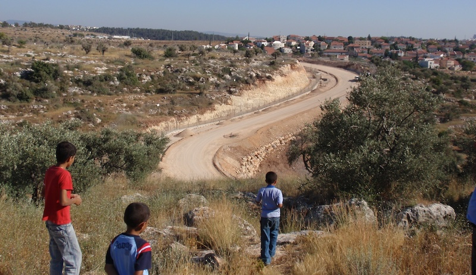

2023-10-09 08:00

Israel’s occupation has been ongoing since either 1947 or 1967, depending on how you count. An indisputable fact is that Israel has kept Palestinians under martial law for the last 75 years and has steadily chipped away at land intended to be their national homeland.
Israel and the Western nations, however, have continuously thwarted Palestinian statehood and winked as endless incursions, assassinations, land theft, and marginalization has created a de facto Apartheid state. American politicians speak of their deep commitment to a “two state” solution, knowing full-well that the land theft has now progressed so far that, without dismantling the illegal settlements, “two states” is nothing but a cynical, meaningless slogan.
Much like the US creation of the Taliban, Israel’s creation of Hamas (which was intended to neutralize the political power of Fatah and the PLO) has backfired spectacularly.
In 2005 Prime Minister Ariel Sharon made the decision to “withdraw” from Gaza. The Israeli military indeed withdrew from Gaza, but more controversial and traumatic for Israelis was the decision to physically dismantle 21 illegal settlements. This was seen as a betrayal of Zionist ideals by Israel’s far right, which still lists Sharon’s “betrayal” in its long enumeration of grievances.
Israel’s 2008 war on Gaza, known as “Operation Cast Lead,” killed 3 Israeli civilians and left 10 IDF soldiers dead by “friendly” fire. It also left vast devastation in Gaza and killed between 759 and 926 Palestinian civilians. A prize-winning photo by AFP photographer Mohammed Abed shows Israeli phosphorus munitions (which melt human bodies) raining down over a ruined school in Gaza. This was a brutal, disproportionate use of Israel’s military, which drew widespread international condemnation — though very little from the United States.
Israel is now in the throes of a crisis of its one-sided democracy. Amid demonstrations that have exposed fault lines in Israeli society, the nation formed its 37th coalition government around Netanyahu’s ultraconservative revisionist Zionist Likud party, Bezalel Smotrich’s ultranationalist Religious Zionist party, and Itamar Ben Gvir’s Neo-fascist Jewish Power party, which openly calls for expelling all Arabs from Israel and territory that Israel claims.
Ben Gvir’s political base is the old Kach party, which was banned for its advocacy of terrorism, and consists of extremists from the settler movement with links to Ygal Amir, who assassinated Israel’s Prime Minister Yitzak Rabin in 1995, and Baruch Goldstein, who murdered 29 Palestinians at prayer and injured 125 in Hebron in 1994.
Last year Netanyahu and Ben Gvir agreed to legalize settlements frozen, not coincidentally, in 2005. The entire West Bank is to be Israel’s Wild West. In a nation without a constitution, Israel’s supreme court is the only obstacle to human rights abuses. And now this coalition wants to neuter the nation’s court. Liberal Israelis fear the country is headed toward a future like Hungary’s.
With greater Palestinian suffering and the rise of a more authoritarian Zionism with fewer restraints and greater territorial aspirations — this is the dangerous context to this weekend’s invasion of Israel by an undisciplined group of Hamas fighters who carried out horrific murders, rapes, assaults and abductions of Israeli and international civilians in violation of international law.
But as an opinion piece by Sanjana Karanth reminds us, the Hamas attack may have been sadistic, indiscriminate and illegal. But to consider it totally “unprovoked” is to ignore 75 years of Israeli repression and Palestinian suffering.
As I watched videos of Hamas fighters moving systematically house-to-house in Sderot, it reminded me of the many videos I’ve seen of IDF troops moving house-to-house in Palestinian villages. It is likely that the Hamas kidnappings were intended in some twisted way to parallel Israel’s arrests, removal to Israeli soil, and indefinite imprisonment of Palestinians, arrested without warrant and imprisoned without court proceedings.
In 2009 I visited Israel and Palestine. I saw one of Israel’s physical Apartheid walls with my own eyes, the dehumanizing checkpoints, and I got a sense of the grim reality and deprivations for Palestinians. I visited a refugee center that generations of Palestinians have had to call home. I also visited an illegal settlement so large and so “American” that it was indistinguishable from an Orange County suburb with its ACE Hardware store and a community college. I visited Hebron and met an ultranationaist settler whose zealotry and violent fantasies alarmed me more than walking around Ramallah unchaperoned looking for a lunch spot.
In Sderot, which this weekend was ravaged by the Hamas invasion, I met with Mizrachi (Jews from Arab countries) peace activists who used to go into Gaza City to shop and who described the widespread PTSD of adults and children who have to hide in safe rooms. At the Zikim kibbutz, which was also breached by Hamas, I met with lefty Jews like me who sympathized with the plight of Palestinians despite being shelled. A huge concrete shield is built over the kibbutz’s daycare center to protect it from ketusha rockets fired so often that a cheeky rockets-to-ploughshares menorah was constructed out of the spent cylinders.
Everyone I met on that visit were all dear people, all precious lives. For everyone, Israelis and Palestinians alike, I want what we should all have – peace, enough to eat, security, a future for children and grandchildren. But for both Palestinians and Jews there can be no peace so long as Israel and Western nations (themselves no strangers to colonialism) wink at Israel’s colonial oppression and refuse to recognize the explosive potential of an oppressed people rising up in frustration because no one cares about them.
Once again this week we saw that potential.
As Israel’s “pro-democracy” movement suggests, Israelis themselves are beginning to understand that a state only for Jews with laws that privilege only Jews cannot ultimately even be a democracy for Jews. Just as white Americans have started to acknowledge this truth and our own history of genocide, slavery, and Jim Crow, many Israelis are beginning to grapple with the realization that Zionism is not so different from good old-fashioned American white supremacy. It might help that many are former Americans who emigrated.
The long-awaited Third Intifada has finally broken out. The old slogan “no justice, no peace” seems particularly apt. Palestinian desperation and Israeli insecurity will be permanent features of Israel’s Apartheid state unless there is sufficient American and international pressure on Israel to abandon its vast illegal settlements to finally enable a Palestinian state to become a reality.